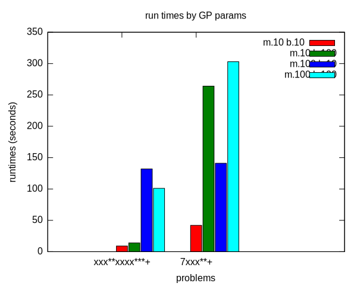

Genetic Programming on IXM
Table of Contents
Report
Introduction
A system of subpopulation Genetic Programming (GP) is implemented over Illuminato X Machina (IXM)1 boards. The GP system is designed in the spirit of the IXM boards and attempts to explore the intuitions2 which served as the impetus for the board's creation. A series of experiments assess the effects of varying traditional GP parameters, of applying coevolution and of various physical layouts on the relative success of the GP. The inherently redundant and distributed nature of subpopulation GP is shown to be a natural fit for the IXM environment and directions for future work are discussed. In the spirit of Reproducible Research3, all source code and experimental data referenced in this work is made available to the reader (see reproduction) in the hopes of encouraging further work in this area.
Illuminato X Machina – telos and construction
An IXM1 board is a small square board containing an atom processor, memory, a button, led lights, hardware timers, a power rail and four connectors arrayed around the perimeter of the board. Although each board is in essence a small self-contained computer they are intended to be used in groups. When boards are connected through their side connections they communicate and share power with their neighbors.

37 IXM boards in operation
One goal of the boards is to enable experimentation with software developed under a new set of assumptions. On a grid of IXM boards the central single CPU, the shared memory and the global clock of a traditional computer are relinquished in favor of a dynamic set of loosely coupled peers, each equipped with its own personal clock processor and memory. In such an environment robustness of operation is achieved through the abandonment of privileged points in space and time and the duplication of functionality across a largely homogeneous populations of peers.
This work attempts to manifest these themes in a GP implementation which will run effectively in the IXM environment.
GP – implementation and defense of deviations from the norm
In an effort to better align with the IXM platform the GP system employed in this work differs from GP norms in a number of areas. These deviations will be defended as they arise. The source code for the GP implementation described below can be found in evolve-sketch.pde and coevolve-sketch.pde. Both files use the collector/ IXM library for communicating results back to a central source.
Representation and Fitness
This approach evolves individuals which are represented as variable length strings of integers and arithmetic operators in Reverse Polish Notation (RPN). The individuals are evaluated by their ability to match a "target" string also represented in RPN. The simplicity of the RPN stack machine facilitated quick development on the IXM boards.

RPN stack machine
The only difference between the individual representation strings and the target strings is the inclusion of the 'sine' operator in the target strings. This unbalance encourages interesting behavior of the individuals as attempt to approximate a trigonometric function using arithmetic operators – in effect evolving towards a Taylor Series.
Genetic Operators
New individuals are generated in the following three manners. In each of the following when an individual is needed as an input to the operation that individual is selected from the population through using tournament selection.
- injection
-
A new individual is created from whole cloth. Each
element in the individual's RPN string is selected at random from
the set of all valid RPN characters. This is the process used to
generated an initial population immediately after board boot-up.
char possibilities[16] = BUILDING_BLOCKS; ind.representation[0] = possibilities[random(15)]; for(int i=0; i < random(IND_SIZE); ++i) { ind.representation[i] = possibilities[random(15)]; index = i; }
- mutation
-
An modified copy is made of an existing individual.
First an exact copy is made, then each step of the copies RPN
string is mutated with a probability equal to
 where
where  is a parameter
of the GP system.
is a parameter
of the GP system.
char possibilities[16] = BUILDING_BLOCKS; for(int i=0; i<size(); ++i) if(random(size()) == mutation_prob) representation[i] = possibilities[random(15)];
- crossover
-
Single point crossover is used to combine two existing
individuals to generate a new individual. First a crossover
point is picked for each parent, then the first half from one
parent is combined with the second half from the other parent as
shown.
int mother_point = random(mother->size()); int father_point = random(father->size()); for(int i=0; i<mother_point; ++i) { child.representation[index] = mother->representation[i]; ++index; } for(int i=father_point; i<father->size(); ++i) { if((index+1) >= (IND_SIZE - 1)) break; child.representation[index] = father->representation[i]; ++index; } child.representation[index] = '\0';
- sharing
- During sharing an individual is selected and is "shared" with all of the IXM board's neighbors.
- tournament selection
-
Whenever an individual is selected from the
population for one of the above operations a "tournament" is
held. In tournament selection
 individuals are
selected from the population at random and the fittest of these
individuals "wins" the tournament and is selected.
individuals are
selected from the population at random and the fittest of these
individuals "wins" the tournament and is selected.
for(int i=0; i<tournament_size; ++i) { challenger = random(POP_SIZE); if(pop[challenger].fitness < pop[winner].fitness) winner = challenger; }
Population Operations – avoiding privileged points
Up to this point the GP system we have introduced is largely standard and should be unsurprising. Where our system differs from traditional GP is in the timing and distribution of operations on the population of individuals. Since one of our goals is uniformity in both space and time we discard the notion of a fixed population cycle and instead repeat all GP operations at constant frequencies. As such there are no discrete "stages" or "steps" in our GP.
Using hardware timers included on the IXM boards we schedule the operations of mutation, injection, crossover, and sharing to recur at fixed frequencies. The frequency of these operations are parameters of the GP system. Whenever one of these operations returns a new individual (e.g. the product of crossover, or an individual shared by a neighbor board) the new individual is incorporated into the population and the current worst individual in the population is removed. The only time an individual will be removed from the population is when it is displaced in this manner.
Given the above setup all of the GP operations are constantly acting on the population in a semi-stochastic interleaved manner. No randomness is explicitly added to the operation scheduling (although this would be sympathetic with our themes) however as the boards periodically become too busy pending GP operations are delayed adding an element of randomness to the system.
Board Layout
The following illustrates the functional components of our GP framework as implemented out on a single board.

Layout of a single IXM board
Properties
The GP system as described has the following properties which are desirable for the IXM environment.
- all boards are peers
- any number of boards can be used effectively – including a single board
- increasing the number of boards increases the effectiveness of the GP system
- boards can be added to the GP system during execution and incorporated on the fly
- the system degrades gracefully as boards are removed from the system
Experimental Methodology
A laptop side Ruby script (either experimenter.rb or
coexperimenter.rb) communicates with an attached group of IXM boards
using the libixm Ruby library and the sfbprog command distributed
with the core IXM software. The Ruby scripts take a series of
parameters and for each combination they
- input parameters to the boards
- initiate board execution
- collect and save raw data output by the boards
- timeout overrunning experiments
- repeat
The experiments presented below had running times between 1 hour and close to 30 hours. The scripts are executed using the gnu screen program to allow persistent execution while the user is not logged into the machine.
The boards report all results using the collector/ IXM library. The collector library allows each board in a group to report parameters back to a central "collector" appending a "path" to the returned results. The path can be used to uniquely identify the board and assign it coordinates in the 2D geometry of the board layout.
All graphs generated as part of this report used the collector output as saved by the above Ruby scripts along with the group.rb and board.rb scripts. These scripts translated the raw path data into 2D information in a form suitable for input to gnuplot.
Results
GP Parameters
Initial experimentation was aimed at ensuring both that our GP system was able to solve simple tasks and that both GP operations ('mutation' and 'crossover') improved GP performance.
These results were generated running evolve-sketch.pde on a single IXM board. Mutation and crossover frequencies of 10 milliseconds and 100 milliseconds (m.10, b.10, m.100, and b.100 respectively) were tested resulting in the runtimes shown below. Times shown are the average time taken to generate an ideal individual over 5 runs. The results indicate that both mutation and crossover reduce the runtime required for the GP to solve problems. In addition it appears that crossover is more effective against harder problems (e.g. "xxx**xxxx***+") while mutation is more effective against simpler problems (e.g. "7xxx**+").

runtime by GP parameters
Sub-populations and Sharing
After the basic GP operations had been verified we investigated the effect of distributing the GP over multiple boards. An series of runs were performed using sharing frequencies of 100 milliseconds and mutation and crossover frequencies of 10 milliseconds. Times shown are the average time taken to generate an ideal individual over 5 runs. Although the effect of adding a second board was not dramatic there is clear evidence that the addition of a second board and a second population did increase the effectiveness of the GP.

sharing individuals across two boards
Sharing and Layout
Next the effects of different sharing rates run over a large group of 15 boards was investigated. The sharing experiments were run over two different board layouts – a straight line and a near figure eight. The results for each layout are presented as well as a comparison between the two. In all experiments below the following three target functions were used.
| Target 0 | Target 1 | Target 2 |
|---|---|---|
| "xxx**xxxx***+" | "7xxx**+" | "xs55+55+**" |
Each GP parameter combination was allowed 10 minutes to attempt to fit each target. 10 runs were performed in each setup and all reported results are the average of the 10 runs.

line layout

figure eight layout
- line
The runtimes for each sharing rate by goal. All sharing rates are reported in milliseconds. In general the results seem to illustrate the a sharing rate of 1000 milliseconds performs best.- "xxx**xxxx***+"
sharing rate ave. time to completion 10000 3.8355099 1000 3.2090558 100 3.2239733 - "7xxx**+"
sharing rate ave. time to completion 10000 4.9986461 1000 3.1983512 100 2.1230925 - "xs55+55+**"
This goal is equivalent to which is not possible for our
GP individuals to match as they do not have the sine function as one
of their operators. The average best score for each sharing rate is
reported.
which is not possible for our
GP individuals to match as they do not have the sine function as one
of their operators. The average best score for each sharing rate is
reported.
sharing rate ave. time to completion 10000 invalid 1000 156.743 100 164.008 the reason that the above results for 10000 are labeled "invalid" is that is appears that some boards did not successfully have their goal reset from "7xxx**+" to "xs55+55+**" in these runs, so no data is available.
although no individuals exactly matched
some did come
close, most notably the following whose RPN representation of
x2*x6-/3x7+*x3x-*/+7*expands to the following algebraic expression((((x * 2) / (x - 6)) + ((3 * (x + 7)) / (x * (3 - x)))) * 7)which does a very good job of matching the target function over the test values of x with a best score of 136.07.
best individual in range
although globally the fit is less impressive

best individual out of range
- "xxx**xxxx***+"
- figure eight
The runtimes for each sharing rate by goal. All sharing rates are reported in milliseconds. In general the results seem to illustrate the a sharing rate of 1000 milliseconds performs best.- "xxx**xxxx***+"
sharing rate ave. time to completion 10000 3.6102906 1000 2.8806907 100 6.4068757 - "7xxx**+"
sharing rate ave. time to completion 10000 24.0118271 1000 3.1030883 100 1.9693912 - "xs55+55+**"
This goal is equivalent to which is not possible for our
GP individuals to match as they do not have the sine function as one
of their operators. The average best score for each sharing rate is
reported.
sharing rate ave. time to completion 10000 255.311111111111 1000 183.966666666667 100 253.433333333333 although no individuals exactly matched
 some did come
close, most notably the following whose RPN representation of
some did come
close, most notably the following whose RPN representation of
0757x/3-x+3x-/**x/x+x*expands to the following algebraic expression((((7 * (5 * ((((7 / x) - 3) + x) / (3 - x)))) / x) + x) * x)which does a very good job of matching the target function over the test values of x with a score of 254.35.
best individual in range
although globally the fit is less impressive

best individual out of range
- "xxx**xxxx***+"
- video results
The following videos are provided to better illustrate the dynamic fitness levels across multiple boards during the previous runs. In these videos each board is represented as a bar in a 3d histogram. The placement of the bars mirrors the physical placement of the boards and the height of the bar is equal to the most fit individual on the board. Recall that fitness is calculated as the difference between an individual and the goal, so a lower fitness score is better.note: If the following don't begin playing automatically they can be download from here and saved to your desktop. On a mac you may need to use VLC if your default video player doesn't understand these files.
Formation: line Goal: "xxx**xxxx***+" Run: 0
Formation: line Goal: "7xxx**+" Run: 1
Formation: line Goal: "xs55+55+**" Run: 1
Formation: eight Goal: "xxx**xxxx***+" Run: 1
Formation: eight Goal: "7xxx**+" Run: 1
Formation: eight Goal: "xs55+55+**" Run: 1
Coevolution
Coevolution was implemented by evolving a Genetic Algorithm (GA) over the x values to be checked. The coevolution task was significantly more difficult than the related evolutionary task as a much wider range of possible x values was used. While all pure evolution experiments were run over the static range of integers between 0 and 10 the coevolution x values ranged from -100 to 100. Each x-range coevolution "individual" consisted of 5 x values taken from this range. Mutation of coevolution individuals consisted of changing an x value by +-1 with a chance of 1/5. Single point crossover was used to breed two coevolution individuals. Since coevolution frequently found no perfect solution only the average best score is reported.
- line
The runtimes for each sharing rate by goal. All sharing rates are reported in milliseconds. In general the results seem to illustrate the a sharing rate of 10000 milliseconds performs best.- "xxx**xxxx***+"
sharing rate ave. time to completion 100000 29366.703 10000 5.0 1000 10.8 - "7xxx**+"
No results are reported for this range, as many runs did not return any results. The only plausible reason for this result is that the reported scores for these runs were so large (bad) as to overflow the c++doubletype, returning non-integer values which the Ruby scripts could not parse. Future sections with this same problem will be indicated as insufficient data. - "xs55+55+**"
insufficient data
- "xxx**xxxx***+"
- figure eight
The runtimes for each sharing rate by goal. All sharing rates are reported in milliseconds. In general the results seem to illustrate the a sharing rate of 1000 milliseconds performs best.- "xxx**xxxx***+"
sharing rate ave. time to completion 100000 89985.059 10000 16.624 1000 5986.421 - "7xxx**+"
sharing rate ave. time to completion 100000 9.075 10000 10.81 1000 6651.732 - "xs55+55+**"
insufficient data
- "xxx**xxxx***+"
- videos
same disclaimer/instructions as above…
Conclusions
A subpopulation GP system was shown to be effective in the IXM
environment. The GP operators of mutation and crossover were both
shown to improve the effectiveness of the GP to varying degrees
depending on the difficulty of the target problem. Distribution of
the GP system over multiple IXM boards was shown to improve the speed
with which the GP solved problems although the ideal speedup of
 was not achieved.
was not achieved.
In normal evolution with mutation and crossover rates of 10
milliseconds or 100 Hz a sharing rate of 1000 milliseconds or 1 Hz was
shown to outperform sharing rates of 100 milliseconds 10 Hz and 10000
milliseconds  Hz. This was true in both the straight
line board configuration and the figure eight configuration. This
indicates that a sharing rate of roughly 100 times the mutation and
crossover rate is near ideal.
Hz. This was true in both the straight
line board configuration and the figure eight configuration. This
indicates that a sharing rate of roughly 100 times the mutation and
crossover rate is near ideal.
There was no significant or consistent difference in performance between the two board layouts of a figure eight and a straight line. While it is possible that further experimentation with more tightly packed formations could reveal some statistically significant difference in layout performance this work indicates that such differences will not be dramatic.
Coevolution was added to the existing GP system. While the coevolutionary runs performed poorly it is not immediately clear if this is due to an inherent feature of coevolution in this domain, to a failure of implementation, or to the fact that the problem space of the coevolutionary runs was so much larger than that of the initial GP runs. In those coevolutionary runs where reliable numbers were returned the line formation seemed to outperform the figure eight formation, and the sharing value of 10000 milliseconds or 100 times the evolutionary individual sharing rate seemed to perform best.
Future Work
This work could be expanded upon in a number of interesting manners. Each of the following sketches a possible path for future work.
meta-evolution
The GP parameters of mutation, crossover, and sharing rate can be set on a per-board level. With a large collection of boards it would be plausible to vary the GP parameters with each board and perform meta-evolution of the GP parameters simultaneously with the GP.
This work has a number of interesting features.
- The meta-evolutionary system would have a one-to-one mapping between individuals and boards. This means that each individual in the population has a static physical address and can only communicate with its physical neighbors. This limitation means that no global GP operations (e.g. best/worst individual or random selection of individuals) could be applied to the boards. Rather the GP would need to be distributed s.t. each GP action (crossover, mutation, selection, death) acts on a limited horizon.
- When applied over a running GP system this meta-evolution could help to refine parameters more quickly than the exhaustive battery of runs used in much of this report.
- When applied over a running GP system it is plausible that the meta-evolution would adapt the GP parameters to fit different stages of a single run of the base GP. For example it may emphasize exploratory operations in the early stages and then slowly switch to more exploitative operations in that later stages of a run.
dynamic board group
While both the design of our GP system and information trials indicate that the setup would be robust to a dynamic board environment where boards are being added and removed from the group mid-run, we have presented no experimental evidence of these claims. It would be a relatively simple extension of our current experimentation environment to allow experimentation in this area. Two new scenarios would each require a small addition to the current software.
- board removal
- In this scenario a board is removed mid-run. Rather than having a human experimenter physically disconnect boards during the run, the ability of the boards to turn power off to their neighbors could be used by the computer-side Ruby scripts to simulate neighbor loss through power offs.
- board addition
- In this scenario a new board would be added mid-run. To make this approach practical the current goal and possibly the current individual population would need to be shared with any new boards after they connect and/or after they have downloaded the GP sketch. This example code-flow-sketch.pde provided by Prof. Ackley demonstrates the relevant core software functions required by a newly added board for acting immediately after it has had its software updated. Alternately such a data pull could simply be added to the startup routine – changing the default behavior of all newly booted boards to an attempted pull of new goals or individuals.
splitting up the fitness space across the boards
By partitioning the fitness space across a connected group of boards it may be possible to find partitions that outperform the default choice of testing over the entire space on each board. One exciting aspect of this expansion is its incorporation of the physical properties of the group of boards into the GP space.
For example, the fitness function used in this work of comparing individuals against a target function at specific values of x could be partitioned by assigning each board its own range of x values. There could be many interesting properties of this approach.
- investigate whether contiguous x values assigned to neighboring boards is more or less effective than random assignment of ranges of x values
- evaluating an even stricter direct mapping of the 2D space in which the boards are arrayed to the 1D space of possible x values, such that, the values present on a boards are strictly a result of the physical placement of the board in the group
- evaluating the variety of different 2D board layouts in combination with various x-value partitions
- investigate the behavior and interactions of subpopulations each of which may only be able to "inhabit" some subset of the boards in the group
Reproduction and Expansion of this work
Both the pdf and html versions of this report were generated using
Emacs Org-mode and Org-babel. These tools allow source code and data
to be interleaved with prose in the same documents. The source
documents as well as all supporting files required to re-create this
report can be obtained as a .tar or .zip download or using git
from http://github.com/eschulte/gp4ixm-report. A single massive
.tar file including all graphs figures and pictures can be
downloaded from here.
See data-analysis for a collection of the tools used in collecting and analyzing experimental results.
Footnotes:
Date: 2009-12-16 12:11:29 MST
HTML generated by org-mode 6.33trans in emacs 23